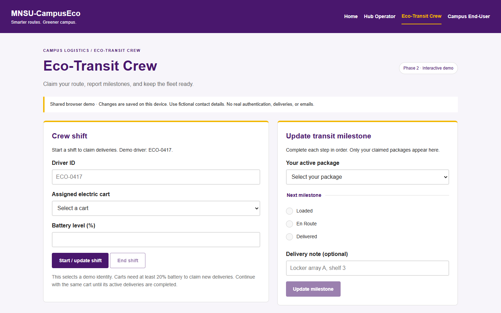
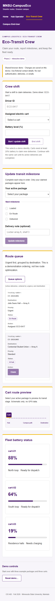

CIS 483 · Phase 2 · October 26, 2026
MNSU-CampusEco
Client interactivity and responsive campus logistics
Misgana Kebede · Clement Mbuyi
Yonatan Alemayehu · Emran Abatemam
One connected delivery workflow
Check in → Claim → Loaded
En Route → Delivered → Receipt
The same tracking number connects the hub, crew, and recipient portals.
Each update adds a timestamped event. The interface updates without a page refresh.
A shared browser simulation; no real deliveries or authentication.
JavaScript models and persistence
-
Packagevalidates cargo, assigns ownership, enforces milestones, and records receipt. -
Vehiclevalidates battery reports;EcoCourierrepresents the active driver. - Versioned localStorage preserves records. Hydration restores object behavior after refresh.
- Storage events refresh other tabs; sessionStorage keeps a tab’s active shift.
Code: js/models.js and js/app.js. Storage is limited to one browser origin.
jQuery drives the interface
Delegated clicks handle newly added delivery rows.
Sliding options reveal preferences and queue filters.
The cart marker animates between transit stages. Reduced motion is respected.

Official minified jQuery 3.7.1 is bundled locally.
Responsive courier tools
One column on phones; two dashboard columns on desktop.
The mobile queue becomes a list of labeled delivery cards.
Navigation wraps, controls stay reachable, and wide logs scroll within their regions.
Checked at 320, 390, 768, and 1440 pixels.

Live delivery demonstration
- Hub: check in CE-20261004, 3.2 lb, 12 × 8 × 6 in.
- Crew: start ECO-1234 / cart-01 and claim it.
- Advance Loaded → En Route → Delivered.
- Recipient: track, confirm receipt, then refresh.
Open the application · Keep an operator tab open to show shared updates.
Verification and demo boundaries
- Tests cover the complete delivery journey, saved state, and updates across tabs.
- Invalid cargo, duplicate tracking, wrong milestone order, and low battery are rejected.
- Browser checks exercise mobile layouts, keyboard panels, and literal text rendering.
No real authentication, email, or GPS. Carbon metrics use an illustrative 2 km × 0.20 kg CO₂ per delivery.
Phase 3 handoff
Replace browser storage with authenticated JSON endpoints and durable relational records.
Move business rules to server validation, then add asynchronous updates and the required backend technologies.
Phase 2 stays entirely in the frontend. Development Node tooling serves static files only.
Sources: project assignment, Phase 2 Tasks 2.1–2.3; repository implementation; jQuery events and animation documentation.